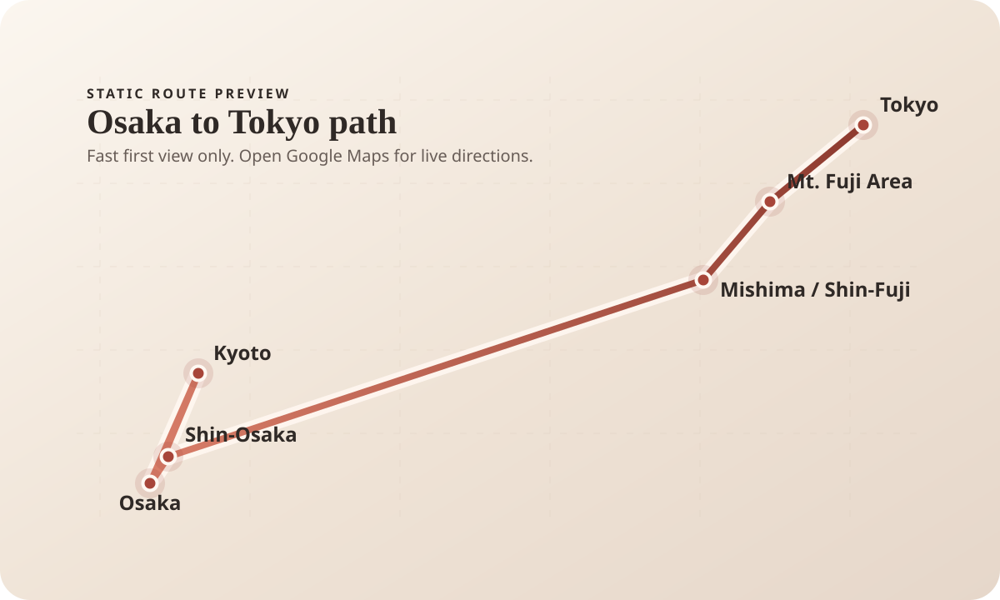

Trip Overview 旅の概要
7 Days 7日間Compact city-to-scenic route with optional Tokyo extension days 都市から景色へ流れる短期ルートで、必要なら東京の日程を追加できます
Japan Trip 日本旅行
Preparing your journey... 旅の準備をしています...
Japan Trip 日本旅行
A simple website for this trip, organized as overview, checklist, notes, routes, and essentials. このウェブサイトは、概要、チェックリスト、メモ、ルート、準備の順で見やすく整理しています。
Overview 概要
Each section is separated, and the itinerary follows the natural flow from Osaka to Tokyo with optional extra Tokyo days at the end. 各セクションを分けて整理し、大阪から東京までの流れと、必要なら最後の東京追加日程まで追いやすくしています。
Trip Overview 旅の概要
7 Days 7日間Compact city-to-scenic route with optional Tokyo extension days 都市から景色へ流れる短期ルートで、必要なら東京の日程を追加できます
Main Stops 主な立ち寄り先
5 Core Stops 主要5か所Osaka, Kyoto, Hakone, Mt. Fuji area, Tokyo 大阪、京都、箱根、富士山エリア、東京
Transit 移動
1 Bullet Train Ride 新幹線1回Shin-Osaka to Odawara shinkansen plus local Hakone and Fuji-side transfers 新大阪から小田原までの新幹線と、箱根・富士側のローカル移動
Timeline 進行
Complete each day to move forward. After Day 7, you can choose whether to unlock the optional days. 各日を完了すると旅が進みます。7日目のあとで、追加日程を解放するかどうか選べます。
Trip Progress 旅の進み具合
Day 1 of / 7 days 日0 full days completed 完了した日程は0日です
Checklist チェックリスト
A day-by-day checklist optimized around geographic clustering and cleaner transfers. 地理的なまとまりと移動のしやすさを優先して組み直した、日ごとのチェックリストです。
Day 1 1日目
Osaka 大阪
Day 2 2日目
Kyoto East 京都東側
Day 3 3日目
Kyoto -> Osaka 京都 -> 大阪
Day 4 4日目
Hakone Loop 箱根周遊
Day 5 5日目
Hakone -> Kawaguchiko 箱根 -> 河口湖
Day 6 6日目
Fuji Area 富士エリア
Day 7 7日目
Tokyo / Shibuya 東京 / 渋谷
Optional Days 追加日程
Day 7 is complete. Unlock Days 8 and 9 if you want extra Tokyo time. 7日目まで完了しました。東京での追加時間を入れたい場合は、8日目と9日目を解放できます。
Optional Days 8 and 9 are available if you want more time in Tokyo. 東京でさらに過ごしたい場合は、8日目と9日目を追加できます。
Optional 追加日程
Day 8 8日目
Tokyo 東京
Day 9 9日目
Tokyo 東京
Notes メモ
These notes explain the route changes and a few practical travel tips. ここでは、旅程の変更点と実用的な旅行のコツを簡単にまとめています。
Keep arrival day easy: Dotonbori, Shinsaibashi, dinner, and nightlife. Those are natural neighbors in Osaka's Minami area, so this is the cleanest first-night plan. 到着日は無理をせず、道頓堀、心斎橋、夕食、夜の街歩きに絞るのが最もきれいです。これらは大阪ミナミで自然につながる近いエリアなので、初日の動きとしてまとまりが良いです。
Do Kiyomizu-dera, Ninenzaka, Yasaka Pagoda, Gion, and Nanzen-ji as one east-side day. Kiyomizu and Higashiyama work best early, and Nanzen-ji still fits the same eastern hills logic instead of forcing a west-east zigzag. 清水寺、二年坂、八坂の塔、祇園、南禅寺をひとつの東側の日としてまとめます。清水寺と東山は朝のほうが動きやすく、南禅寺も同じ東側の流れに乗るので、西と東を行き来する無理がなくなります。
Move Arashiyama here instead of forcing it into Day 2. Saga and Arashiyama work better as their own area, then Osaka Aquarium Kaiyukan and Tempozan pair neatly on the return. If you need one cut, Osaka Castle is the cut. 嵐山は2日目に無理に入れず、3日目へ移します。嵯峨・嵐山はそれだけでまとまりのあるエリアで、戻ってから海遊館と天保山を組み合わせると流れがきれいです。もしひとつ削るなら、大阪城が削り候補です。
Treat Hakone as one loop: Shin-Osaka to Odawara, then Gora or Sounzan, Ropeway, Owakudani, Togendai, Lake Ashi cruise, Hakone Shrine or Moto-Hakone, then ryokan. Stay near Lake Ashi, Togendai, or Sengokuhara rather than Hakone-Yumoto so the Fuji transfer stays cleaner. 箱根は一筆書きで回します。新大阪から小田原へ行き、強羅または早雲山、ロープウェイ、大涌谷、桃源台、芦ノ湖クルーズ、箱根神社または元箱根、そして旅館という流れです。富士側への移動をきれいにするため、箱根湯本より芦ノ湖、桃源台、仙石原寄りに泊まるほうが合います。
Make this a lighter transfer-and-scenery day: slow morning, onsen, then move toward Kawaguchiko via Gotemba. Use the day for arrival views and sunset instead of cramming in more Hakone. この日は移動と景色を軽く入れる日にします。朝はゆっくりして温泉を使い、そのあと御殿場経由で河口湖へ向かいます。さらに箱根を詰め込むより、到着後の景色と夕景に使うほうがきれいです。
Use this as the weather-flex day: Chureito first if Fuji is visible, then Lake Kawaguchiko, then Oshino Hakkai. Arakurayama Sengen Park is one of the signature Fuji viewpoints, so it works best as the priority stop rather than a leftover add-on. この日は天気優先日にします。富士山が見えるなら最初に忠霊塔、そのあと河口湖、最後に忍野八海です。新倉山浅間公園は富士の代表的な展望地のひとつなので、余り物ではなく最優先で置くほうが合います。
Keep Tokyo focused on Shibuya only: Crossing, wandering, food, and Shibuya Sky at night. Fuji Excursion into Shinjuku or highway buses are the clean options from Kawaguchiko, and Shibuya Sky is worth prebooking because entry is timed, rooftop closures happen in bad weather, and large bags are not allowed. 東京は渋谷だけに絞ります。交差点、街歩き、食事、そして夜の渋谷スカイです。河口湖からは富士回遊の新宿直通か高速バスがきれいな選択肢で、渋谷スカイは時間指定制、悪天候で屋上閉鎖もあり、大きい荷物も不可なので事前予約の価値があります。
Route ルート
See the Osaka -> Kyoto -> Osaka -> Shin-Osaka -> Odawara -> Hakone -> Mt. Fuji area -> Tokyo path at a glance with a lightweight preview. 大阪 -> 京都 -> 大阪 -> 新大阪 -> 小田原 -> 箱根 -> 富士山エリア -> 東京の流れを、軽いプレビューでひと目で確認できます。
Map View 地図表示
This keeps the route section instant: a static geographic preview with no heavy live map payload. ルートセクションを即表示にするため、重いライブ地図は使わず、静的な位置関係プレビューだけにしています。

Osaka -> Kyoto -> Osaka -> Shin-Osaka -> Odawara -> Hakone -> Mt. Fuji area -> Tokyo. 大阪 -> 京都 -> 大阪 -> 新大阪 -> 小田原 -> 箱根 -> 富士山エリア -> 東京。
Open route in Google Maps Googleマップでルートを見るEssentials 準備
A trimmed checklist with the parts that matter most for this Osaka, Kyoto, Hakone, Kawaguchiko, and Tokyo route. 大阪、京都、箱根、河口湖、東京の流れで本当に重要な準備だけに絞ったチェックリストです。
Finish the travel, payment, and phone basics before you land. 到着前に、渡航、支払い、通信の基本だけは整えておきます。
Lock in the pieces that can slow the trip down if left too late. 後回しにすると旅程が崩れやすい部分だけ先に固めます。
Loading bookings and transit board... 予約と移動のボードを読み込んでいます...
Bookings and transit details could not load right now. 予約と移動の詳細を現在読み込めません。
Nothing marked done yet. Use the action toggle on any item to track what is booked or saved. まだ完了扱いの項目はありません。各項目のトグルで予約済み・保存済みを管理できます。
The Osaka to Hakone to Kawaguchiko stretch gets easier if transfer days stay light. 大阪から箱根、河口湖へ抜ける区間は、移動日を軽くするとかなり楽になります。
Pack for long walking days, temple stops, and one ryokan night. 長い徒歩日、寺巡り、旅館一泊に合わせて絞って持ちます。
Keep the day bag minimal but ready for walking and train days. 街歩きと電車移動に必要な分だけを毎日バッグに入れます。
A few small extras matter more here than they do in Osaka or Tokyo. 大阪や東京よりも、ここでは小さな追加アイテムの実用性が上がります。
Closing Note 締めくくり
A calm final reference before departure, with the route, checklist, and notes kept in one place. 出発前にルート、チェックリスト、メモを静かに振り返れる、最後の確認セクションです。
7 Days • 4 Cities • 1 Journey 7日間 • 4都市 • 1つの旅
Enjoy the memories and safe travels home. 旅の余韻を楽しみながら、気をつけて帰路へ。
Reset リセット
This will restart checklist progress, timeline state, route and map progression, and unlocked optional days. Theme and other settings stay as they are. チェックリスト進行、タイムライン状態、ルートと地図の進み具合、解放済みの追加日程をリセットします。テーマなどの設定はそのまま残ります。